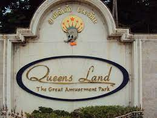

EVP is a person who always has a torch for the goodwill and harmony for the society. Mr. E.V. Perummal Sami Reddy is where the term EVP is coined from. He was a seed that became a banyan tree. His vision to promote the lifestyle and quality entertainment brought EVP WORLD into existence. His untiring nature and hard work gave life to EVP world.On 7th August 1954, Mr. E.V. Perummal Sami Reddy was born in the kancheepuram district of tamilnadu, as the eldest son in an agricultural family to Mr. K. Veeraraghava Reddiar and Mrs. Alameluammal. He married Mrs. EVP. Rajeshwari in the year 1978 and they were blessed with three children two daughters and a son. Mrs. EVP. Rajeshwari is the director of EVP Group of companies, her guidance and support has leaded the companies to marvelous heights. Following the footsteps of Mr. E.V. Perummal Sami Reddy and Mrs. E.V.P. Rajeshwari, the young and enthusiastic managing director Mr. E.V.P. Santhosha Reddy, manages the entire spectrum of business activities of EVP group.
